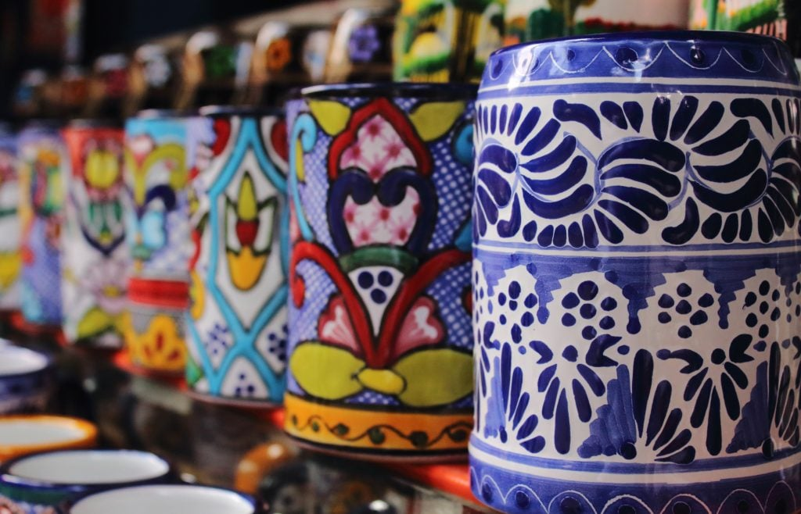
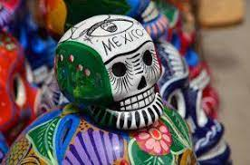

El patrimonio del estado está constituido por obras tangibles e intangibles, algunas de las cuales son consideradas Patrimonio de la Humanidad. Puebla y su cultura aparecen ligados en el contexto mexicano con su tradición gastronómica, la religiosidad de sus habitantes y las chinas poblanas. Sin embargo, Puebla también es un mosaico de culturas, donde la herencia novohispana se mezcla con los vestigios de culturas milenarias y la presencia de numerosos pueblos indígenas que modelan entre todos la identidad de los poblanos, identidad en la que están implicados sucesos históricos relevantes en la historia mexicana como la Batalla de Puebla. Uno de los iconos más representativos del nacionalismo mexicano es la china poblana, que a pesar de ser un personaje propio de todo el centro del país, tras la confusión entre el personaje del pueblo y la China poblana histórica (Catarina de San Juan) quedó ligada en el imaginario popular mexicano a la Angelópolis. Otros aspectos que se relacionan con los poblanos son la riqueza de la gastronomía del estado, que incluye una variada gama de platillos, entre los que se encuentran los chiles en nogada y el mole poblano. Puebla es ampliamente conocida en México como el sitio donde se elabora la cerámica de talavera mexicana (Talavera de Puebla).

